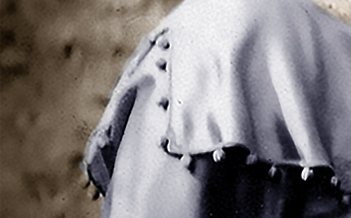
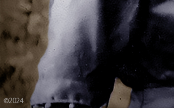
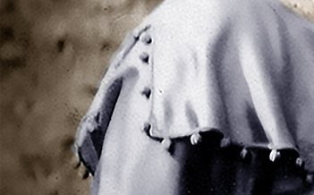
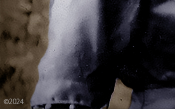

Sylvia Ralya Reinsch
Reich Family Genealogical Research Project

 



Remembering Sylvia Ralya Reinsch
(Reich Family) 11/05/24 - Sylvia Amanda Pecht was born on October 5th 1892 to Albert Blair Pecht and Ellen Osborne Pecht in Paradise, Russell County, Kansas.
Sylvia's father, Albert Blair Pecht, was born to John Crispin Pecht and Amanda Melvina Stover Pecht on 30 August 1861 in Stephenson County, Illinois. When Albert was a young boy, the newspaper reported his accident as follows:
Hot Springs - After remaining unconscious since Sunday Albert Pecht is showing signs of improvement from an accident he sustained in a plunge bath. He showed his daring by coming down the toboggan slide at the plunge in a standing posture. When about to hit the water he slipped and crashed against the framework of the slide, to the horror of scores of other bathers. His head was hurt and he is suffering somewhat from internal hurts, but is out of danger.
Albert Blair Pecht married Ellen May Osbourne on 19 August 1886. According to his obituary in the Nelson Gazette, "He was a member of the United Brethren Church. The deceased was a member of the Odd Fellows Lodge of Hot Springs, South Dakota." Albert died on 14 June 1924 in the U.S. He is laid to rest at Rose Mound Cemetery in Big Bend Township, Republic County, Kansas.
Sylvia's mother, Ellen May Osborne Pecht, was born to William Osborne and Elizabeth West Osborne on 15 January 1867 in Illinois. Ellen Osbourne married Albert Blair Pecht on 19 August 1886. According to her obituary in the Nelson Gazette, "She was a member of the Evangelical Lutheran Church. She was known among relatives and friends as having a loving and unselfish disposition and always ready and happy to do for others more than herself." She died on 25 March 1933 in Hot Springs, Fall River County, South Dakota. The Nelson Gazette reported that her "funeral services were held at Evangelical Lutheran Church March 29th, conducted by Rev. R.V. Davis." She was laid to rest in the Rose Mound Cemetery in Big Bend Township, Republic County, Kansas.
Sylvia had two brothers - Jesse Pecht and Glenn Pecht. Sylvia had a sister - Grace Pecht (McDowell).
Sylvia Pecht married Claude Ralya on July 18, 1913 in Omaha, Douglas County, Nebraska. They had two sons named Donald L. Ralya and Wayne A. Ralya. Sylvia divorced Claude Ralya in September 1930 in Omaha, Nebraska.
Sylvia and Edna Reinsch, the then wife of Dr Claude Reinsch, were in a car accident in Omaha Nebraska on November 3 1929. Following is an article from The Omaha World Herald.
Mrs. Claude Reinsch Dies of Crash Injury - Mrs. Edna Reinsch 28, wife of Dr Claude Reinsch, 1202 South Fifty-second, died this morning at a local hospital of injuries received in an auto crash a week ago. She was the fortieth victim of automobile accidents in Omaha this year. Mrs. Reinsch, and Mrs. C. A. Ralya of 5511 Harney Street, were riding in Mrs. Reinsch's car, Mrs. Ralya at the wheel, early Sunday morning, November 3, when they were struck broadside by a speeding automobile. The driver of the other car fled after the crash, and it was later learned that he had stolen the car a short time before from Miss Lily Tighe, 116 North Fortieth Street. Mrs. Reinsch was thrown from the car and was badly crushed. Mrs. Ralya, who was less seriously injured, left the hospital two days ago. The body of Mrs. Reinsch was taken to the Glendale mortuary. (The Omaha World Herald, Omaha Nebraska, November 11 1929)
Sylvia Pecht married Dr Claude Reinsch on March 17, 1931 in Chicago, Cook County, Illinois. Claude Reinsch brought into the marriage, his son, Robert Eugene Reinsch, whose mother was the late Edna May Aitkenhead Reinsch. Sylvia brought into the marriage, her sons, Donald L. Ralya and Wayne A. Ralya, whose father was Claude Ralya. Wayne Ralya changed his surname to Reinsch after his mother and Dr Reinsch were married. In the 1940 U.S. Census, Sylvia lived with her husband and their sons, Robert and Wayne, at 614 West Arbutus in Compton, California. This is where Sylvia lived at the time of her death.
Sylvia Amanda Pecht Reinsch died on December 20th 1955 at Community Hospital on Termino Avenue, Pacific Coast Highway, in Long Beach, California. Sylvia was cremated at Pacific Crest Crematory on December 23, 1955. Her original obituary follows:
REINSCH. Sylvia Amanda, age 63 of 614 W. Arbutus, Compton, died Dec. 20. Survived by husband, Dr. Claude Reinsch of Compton: three sans, Dr. Robert Reinsch of Compton; Don of San Francisco, and Wayne of Torrance; one sister, Mrs. Grace McDowell of Lewiston, Montana and one brother, Glen Pecht of Jet City, Ore. Services Friday, Dec. 23, 11:00 am., Moreland's Mortuary Chapel. Rev. Bruce Kurrle officiating. (The Lynwood Press, Lynwood, California, Thursday, December 22, 1955, page 8. Courtesy Calcat / Optical Character Recognition by Reich Family)
Copyright 2024 All Rights Reserved


Research, Writing and Photographic Design by
Reich Family Genealogical Research Project
The Reich Family
Special thanks for the photo contributions and
other information from JL Barnett
Special thanks for the genealogical contribution of Jeanette Monroe
"United States, Social Security Numerical Identification Files (NUMIDENT), 1936-2007", database, FamilySearch (https://www.familysearch.org/ark:/61903/1:1:6K4D-L1N4: 11 February 2023), Sylvia Amanda Reinsch,.
"United States, Social Security Numerical Identification Files (NUMIDENT), 1936-2007", database, FamilySearch (https://www.familysearch.org/ark:/61903/1:1:6K44-QCKC : 11 February 2023), Sylvia A Pecht in entry for Wayne A Reinsch,.
Mrs. Claude Reinsch Dies of Crash Injury - The Omaha World Herald, Omaha Nebraska, November 11 1929, page 4.
"United States Census, 1940", FamilySearch (https://www.familysearch.org/ark:/61903/1:1:K97Z-KMM : Sun Mar 10 13:48:36 UTC 2024), Entry for Claude E Reinsch and Sylvia A Reinsch, 1940.
"California, County Birth and Death Records, 1800-1994", FamilySearch (https://www.familysearch.org/ark:/61903/1:1:QGF2-GHTM : Sat Mar 09 23:36:22 UTC 2024), Entry for Sylvia Amanda Reinsch and Albert Pecht, 20 December 1955.
"California, County Birth and Death Records, 1800-1994", , FamilySearch (https://www.familysearch.org/ark:/61903/1:1:QG58-VNR9 : Sun Mar 10 08:13:06 UTC 2024), Entry for Sylvia Amanda Reinsch, 10 January 1956.
Find a Grave, database and images (https://www.findagrave.com/memorial/94613991/claude_eugene-reinsch: accessed November 5, 2024), memorial page for Dr Claude Eugene Reinsch (6 Aug 1897–11 Sep 1984), Find a Grave Memorial ID 94613991, citing Forest Lawn Memorial Park, Long Beach, Los Angeles County, California, USA; Maintained by Calcat (contributor 47061806).
Find a Grave, database and images (https://www.findagrave.com/memorial/105724964/edna_may-reinsch: accessed November 5, 2024), memorial page for Edna May Aitkenhead Reinsch (28 Oct 1900–11 Nov 1929), Find a Grave Memorial ID 105724964, citing Westlawn-Hillcrest Memorial Park, Omaha, Douglas County, Nebraska, USA; Maintained by Fastcubedhopper (contributor 50840705).
Find a Grave, database and images (https://www.findagrave.com/memorial/41012790/albert_blair-pecht: accessed November 10, 2024), memorial page for Albert Blair Pecht (30 Aug 1861–14 Jun 1924), Find a Grave Memorial ID 41012790, citing Rose Mound Cemetery, Big Bend Township, Republic County, Kansas, USA; Maintained by Susan Petersen (contributor 46605423).
Find a Grave, database and images (https://www.findagrave.com/memorial/39269349/ellen-pecht: accessed November 10, 2024), memorial page for Ellen Osborne Pecht (15 Jan 1867–25 Mar 1933), Find a Grave Memorial ID 39269349, citing Rose Mound Cemetery, Big Bend Township, Republic County, Kansas, USA; Maintained by Susan Petersen (contributor 46605423).
Albert Blair Pecht Obituary - The Nelson Gazette (Nelson, NE), Thursday June 26 1924; pg. 3 - HARDY From the Hardy Herald
Ellen Osbourne Pecht Obituary - The Nelson Gazette, Thursday April 6 1933; pg 7